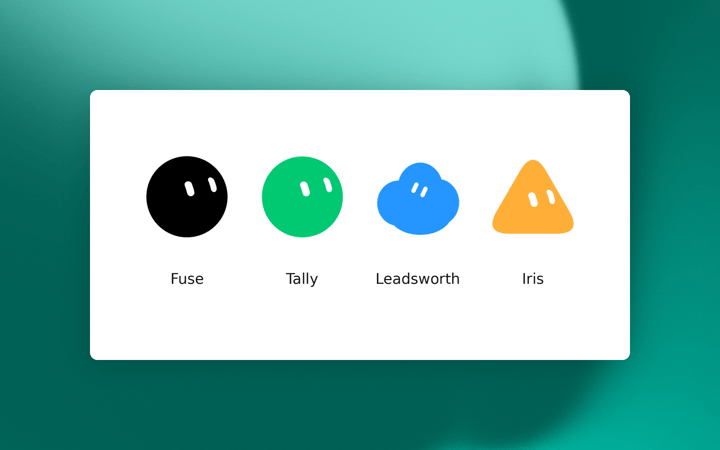

Official guides · 13/27
Grok Bot for Performance Marketing
How we stood up an entire ad program with a team of bots, and the parts we still do ourselves.

I run paid media for Grok Bot (xAI's AI assistant that comes with its own computer), and we ship faster than any team I've been on. That's almost entirely because of our bots.
We've been dogfooding the product since day one, but the real test was Grok Bot's own launch. The bar for success was simple. Can we use Grok Bot to stand up an entirely new ad program from scratch?
How to launch a new performance marketing program with Grok Bot
Going 0 to 1 on a new product used to take weeks of prep before a single ad ran. Most of that prep can be delegated to Grok Bot now. The bots get us to a strong v1 on every piece of the planning process, and we spend our time on the parts that need strategic decisions.
- Demand research. This used to be a few hours in keyword planners and ad libraries. A bot pulls search volume, flags where non-brand coverage opportunities lie, and summarizes what competitors are running. I read it and decide which path forward makes the most sense for us.
- Budget and media mix. Instead of building the split manually, we give a bot the target CAC and it drafts a recommended mix. What captures demand that already exists, what creates it, what's held back for testing, and whether each line has enough weight to get out of a learning phase. We approve the numbers before moving forward.
- Channel mix. After budgets are confirmed, our bot drafts the campaign structure and a naming convention to make reporting easy to pull together.
- Copy. We don't have a dedicated copy bot, but our channel-specific bots take a first stab. Each channel bot is familiar with character limits and best practices to follow across the board. The v1 gets us most of the way there, and I rewrite anything that looks off.
- Creative. Iris, my project manager bot, turns approved copy into a brief in Notion (a notes and database app) and pings our design team letting them know that a new ask is in.
- Conversion tracking. This is where a dedicated bot trained on your infrastructure really makes a difference. It stands up the events in Tag Manager and then checks to make sure conversions are flowing across channels.
- Reporting. Whenever we stand up a new product or initiative, reporting asks are the first questions we receive. We have a dedicated bot that builds out a v1 reporting sheet, and then wires up a new tab in our bespoke reporting tool.
Bots don't replace the media buyer, but they sure make our lives easier.
Why Grok Bot works for performance marketing
Paid media is a lot of clicking around. Every channel has its own goals, its own naming convention, its own targeting, and there's no single API (a way for programs to talk to each other) that covers all of it. That's why it matters that these bots have their own computer. They can work inside the platforms the same way we do, and hand back the part that needs a decision from us.
Our channels are specialized, so our bots are too. The one working in LinkedIn knows the lead funnel and what a message ad should look like. The one in Search knows match types and how our negatives are structured. That's a lot easier to trust than one generalist with partial knowledge of six platforms, and it's how you'd staff the team if you were hiring for it anyway.
They also sit in Slack (a work chat app), Sheets, Databricks, and the ad accounts at the same time, so a lead isn't just an orphaned form fill. We're actually able to track down-funnel performance and store that context for decision-making conversations on which campaigns to scale.
The bots keep up with our pace whether or not my laptop is open, which allows a small team like ours to punch way above its weight.
Meet the performance marketing bots

The four performance marketing botsThese are the four bots that we actually run internally for performance marketing, with shareable templates so you can add them directly into Grok Bot.
Fuse stops other bots from clicking around an ad account profusely, or from firing APIs hard enough to get our account banned. This is our gatekeeper and one of the first bots we set up. Add Fuse to Grok Bot
Tally watches Slack for "can you pull" requests and drafts a response by pulling metrics from our data warehouse. Life saver when you're in back to back meetings. Add Tally to Grok Bot
Leadsworth tracks down-funnel lead performance and keeps us on pace for lead goals with proactive recommendations. Add Leadsworth to Grok Bot
Iris keeps creative, procurement, and project threads from dying in Slack. This one saves me so much time and is one of the main reasons why we're able to ship ads at the pace we move. Add Iris to Grok Bot
Once the program is live
The 0 to 1 work gets you launched. After that it turns into the same handful of jobs every week, and those are the ones our bots own. They run on their own computers on a schedule, so most of this is done before I'm at my desk.
Spend and conversions get checked by channel every day
A bot watches every channel each morning and checks whether spend is pacing where it should be and whether conversions are still coming through. Pacing gets measured against the monthly budget goal and against what that channel spent over the last 7 days.
When it all looks normal, we don't hear about it. We only get pinged when something's off.
- A channel spends double the daily budget overnight.
- A channel gets $0 in spend.
- Conversion count dropped to zero because a tag stopped firing.
These are imperative to catch early, and can be difficult to track given the amount of ad platforms that we manage.
The "can you pull" asks get answered without me
Most reporting requests are essentially the same. A channel, a date range, a campaign. Tally catches them in Slack and drafts the answer from the data warehouse, so a question at 11am doesn't sit around until I'm out of meetings. If the data isn't in the warehouse, our bots use the platform logins as a fail-safe.
Lead pacing and performance
Leadsworth tracks down-funnel performance against our lead goal and tells us when pacing is off, with recommendations attached.
Budget between personas is still my call, and so is when a boosted post is fatigued and needs to come down.
Search coverage every time the product ships
Once a week, a bot reads the product changelog and checks whether Search already covers whatever is new. Any gaps go to a sheet for review, with recommendations on campaign and ad group mapping. We ship new features almost every day, so it's important to keep up and keep our campaigns up to date.
Creative that would otherwise stall in a thread
Iris keeps the briefs moving. A new batch in review, a post we want to boost, an asset waiting on design or procurement. Shipping ads quickly is mostly a coordination problem, not a creative one, and this is the bot that handles the coordination half.
None of these jobs need me to kick them off, which took a minute to get used to.
Where to start with performance marketing bots
Start with reporting. It's the easiest job to hand off, and it buys back the time you need to build everything else.
Connect the tools you use the most. Slack, Sheets, Notion, and the ad platform where most of your budget sits. The data warehouse can come later.
Write the bot like a job description. What it owns, the KPI it's responsible for, and where it has to stop and ask you. That last part matters more than the first two.
Give it one channel instead of all of them. A bot that knows one platform's rules cold is worth more than one that's vaguely familiar with six.
Record a click-path you've already done a hundred times with the built-in training tool.
Keep platform actions as drafts for the first few weeks. You'll trust it faster once you can see what it would have done.
Add the second bot when the first one gets boring, and put anything that touches an API behind a gatekeeper before you scale up.
FAQs
What should a performance marketer automate first with Grok Bot?
Reporting. This is the easiest starting point and saves a ton of time throughout the day to keep shipping ads.
Can Grok Bot change my ad budgets on its own?
Only if you explicitly tell it to. We have guardrails in place to make sure nothing changes without our approval.
How is this different from a dashboard?
A dashboard waits for you to open it. These bots sign into the tools, run on a schedule, and post when the job is done or when a source failed. You still make the call.
Do I need a separate bot for each channel?
Not to start. But a bot that knows one platform's character limits, structure, and quirks ends up more useful than one trying to cover everything. We grew into it that way.
That's how we run paid media now. The basics haven't changed. We just stopped doing the parts of them that never needed a person.
If you try one thing this week, make it this reporting bot. Everything else gets easier once you're not rebuilding the same numbers by hand.
Written by Miguel Cruz
Source: https://x.ai/bot/guides/grok-bot-for-performance-marketing